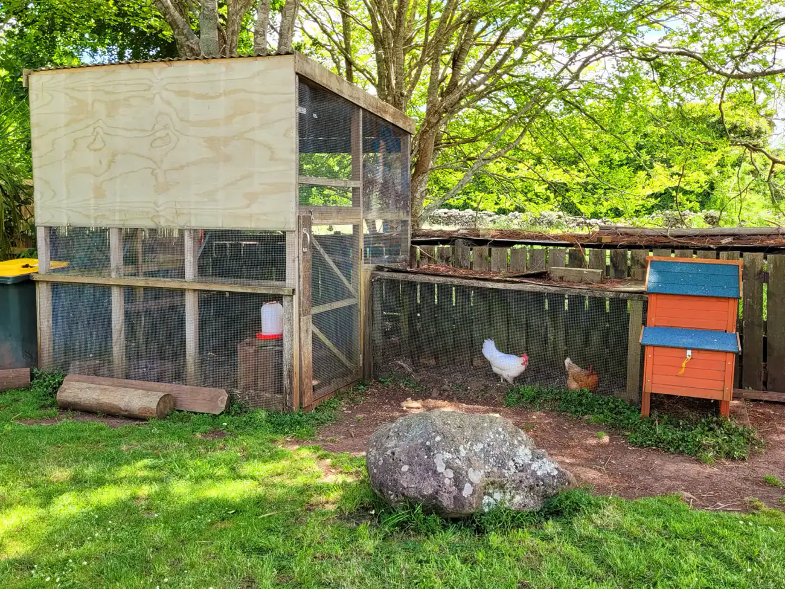

Our story
A small boutique centre on the outskirts of Whangarei, nestled on a 133 acre farm with a significant area of native forest. Open all year round apart from public holidays.
We're licensed for 30 children: 8 under two years old and the balance over two. Our tamariki spend time in nature with weekly Wild Woods excursions: Puriri trees over 400 years old, friendly Tuna, streams to explore, trees to climb, and a maze of old trails to lead us on adventure and discovery.
Learning experienced in the bush is brought back to the centre, where our connections to Papatūānuku are part of our daily practice. Our practice is influenced by two childcare philosophies: 'children are their own best risk managers', as promoted by Claire Warden of Mindstretchers in Scotland, and, in our Under 2 area, the Magda Gerber (RIE) philosophy.


